source("setup.R")5 Data Visualization in R
This lesson covers data visualization with ggplot2: how to build a chart, how to customize it, and how to make it ‘publication ready’.
Our focus is on a question that comes up constantly in environmental data: how do things change over time, and how do you show several variables changing together in one figure? We will build up from a basic line chart to a polished small-multiple figure that lets us compare air quality, temperature, and precipitation across two summers.
First, set up your session by executing your set up script we created in Lesson 1.
Note: There are some new packages we will use below. For simplicity, you can add them to your setup.R script by tacking them on to the packages <- c() list. The new packages are:
ggthemesRColorBrewerviridisplotlypatchwork
5.0.1 Data Preparation
For today’s lesson we are going to be working with daily air quality and weather data for Fort Collins, CO. Most of the lesson will stay focused on May through August of 2026, and our final figure will compare that summer with May through August of 2025. This data can be found on Canvas in the Data Module in .csv format titled fort_collins_aq.csv. Download that file and put it in a data/ folder in your R Project.
After that, read the .csv into your R session using read_csv():
fc_air <- read_csv("data/fort_collins_aq.csv") %>%
filter(date >= as_date("2026-05-01"),
date <= as_date("2026-08-31"))Inspect fc_air and the structure of the data frame:
glimpse(fc_air)Rows: 123
Columns: 11
$ date <date> 2026-05-01, 2026-05-02, 2026-05-03, 2026-05-04, 2026-05…
$ pm25_conc <dbl> 4.8, NA, NA, 4.8, 2.4, 3.9, 6.3, 3.0, 3.9, 3.6, 5.0, 6.7…
$ pm25_aqi <dbl> 27, NA, NA, 27, 13, 22, 35, 17, 22, 20, 28, 37, 38, 31, …
$ pm25_category <chr> "Good", NA, NA, "Good", "Good", "Good", "Good", "Good", …
$ temp_max_f <dbl> 65.23, 73.26, 75.79, 73.85, 44.52, 44.15, 71.13, 70.97, …
$ temp_min_f <dbl> 31.02, 33.28, 41.21, 41.05, 32.62, 31.30, 31.65, 46.00, …
$ temp_avg_f <dbl> 50.02, 55.61, 60.58, 55.30, 34.75, 36.85, 52.69, 59.11, …
$ precip_in <dbl> 0.00, 0.00, 0.00, 0.04, 1.03, 0.59, 0.01, 0.03, 0.01, 0.…
$ solar_rad <dbl> 474.14, 505.61, 313.37, 181.79, 55.51, 363.09, 377.77, 3…
$ wind_mph <dbl> 1.872500, 2.373750, 2.205833, 2.202500, 1.280000, 2.5166…
$ gust_mph <dbl> 15.13, 15.04, 17.32, 18.63, 12.93, 12.63, 21.00, 15.21, …Notice that read_csv() recognized date as a real date rather than as text. That matters more than it might seem. Because date is a Date column, ggplot2 knows that May 1 and May 2 are one day apart, and it can label an axis in months instead of raw numbers. If date had come in as text, every chart in this lesson would treat the dates as unordered categories.
We are going to follow three variables across the summer:
pm25_aqi— daily Air Quality Index for fine particulate matter (PM2.5), calculated from the day’s average concentration. Higher is worse. Anything at or below 50 is ‘Good’ and 51 to 100 is ‘Moderate’. This summer stayed inside those two categories, peaking at exactly 100 during an early August smoke episode.temp_max_f— daily maximum temperature, in degrees Fahrenheit.precip_in— total daily precipitation, in inches. Most summer days are dry, so this variable behaves very differently from temperature or air quality: a few storm days stand out from many zero-precipitation days.
Five days in the record have no air quality reading, because the monitor reported too few hours for a trustworthy daily average. We will see exactly what ggplot2 does about that in a moment.
Note: This data for Fort Collins was retrieved entirely in R from two sources: OpenAQ for air quality and CSU’s own CoAgMET weather network for temperature, precipitation, solar radiation, and wind. The air quality readings come from a regulatory monitor here in town. If you are interested in how I did this, expand the code below. You will need your own OpenAQ API key to run it (free and instant here); CoAgMET needs no key.
Show the code used to retrieve this data
library(httr2) # if trying to run, probably need to install first!
openaq_key <- "9d63f209b2b7fd5ee091e0c28d4ca42cad49c32bcb04999b29274dfe2156cb4b"
start_date <- as.Date("2025-01-01")
end_date <- as.Date("2026-08-31")
# Fort Collins, near the CDPHE monitor at 708 S. Mason St.
fc_lat <- 40.5853
fc_lon <- -105.0844
coagmet_station <- "fcl01" # CoAgMET "Fort Collins"
all_dates <- seq(start_date, end_date, by = "day")
# Download to a temp file first so HTTP errors are readable
fetch_to_temp <- function(url) {
tmp <- tempfile(fileext = ".csv")
resp <- request(url) %>%
req_error(is_error = function(resp) FALSE) %>%
req_perform(path = tmp)
if (resp_status(resp) != 200) stop("Request failed: HTTP ", resp_status(resp))
tmp
}
# --- 1. CoAgMET daily weather -------------------------------------
# `station` and `date` are always returned, so they must NOT be listed
# in fields=. We skip the header and name the columns ourselves.
coagmet_fields <- c("tAvg", "tMax", "tMin", "precip",
"solarRad", "windRun", "gustSpeed")
coagmet_url <- paste0("https://coagmet.colostate.edu/data/daily/", coagmet_station, ".csv",
"?from=", start_date, "&to=", end_date,
"&header=no&fields=", paste(coagmet_fields, collapse = ","))
weather <- read_csv(fetch_to_temp(coagmet_url),
col_names = c("station", "date", coagmet_fields)) %>%
mutate(across(where(is.numeric), ~ na_if(.x, -999))) %>% # -999 = missing
transmute(date = mdy(date),
temp_max_f = tMax,
temp_min_f = tMin,
temp_avg_f = tAvg,
precip_in = precip,
solar_rad = solarRad,
wind_mph = windRun / 24, # daily wind run (mi) -> mean speed
gust_mph = gustSpeed)
# --- 2. OpenAQ daily PM2.5 ----------------------------------------
# First find the PM2.5 monitors near Fort Collins (parameters_id 2 = PM2.5,
# radius in metres), then pull daily averages.
openaq_get <- function(path, query = list()) {
request("https://api.openaq.org") %>%
req_url_path_append(path) %>%
req_url_query(!!!query) %>%
req_headers("X-API-Key" = openaq_key) %>%
req_perform() %>%
resp_body_json(simplifyVector = FALSE) %>%
pluck("results")
}
locs <- openaq_get("/v3/locations", list(
coordinates = paste(fc_lat, fc_lon, sep = ","),
radius = 25000, parameters_id = 2, limit = 100
))
monitors <- map_dfr(locs, function(l) {
pm <- keep(l$sensors, ~ .x$parameter$name == "pm25")
if (length(pm) == 0) return(tibble())
tibble(location_id = l$id, name = l$name,
lat = l$coordinates$latitude, lon = l$coordinates$longitude,
sensor_id = pm[[1]]$id)
})
# The list mixes reference-grade regulatory monitors (provider "AirNow",
# run by CDPHE) with low-cost community sensors. Location 1331 is
# "Ft. Collins - CSU Facilities", the CDPHE PM2.5 monitor.
chosen <- filter(monitors, location_id == 1331)
# /days gives daily means built from hourly data.
fetch_days <- function(sensor_id, from, to) {
out <- list(); page <- 1
repeat {
res <- openaq_get(paste0("/v3/sensors/", sensor_id, "/days"), list(
date_from = format(from, "%Y-%m-%d"),
date_to = format(to + 1, "%Y-%m-%d"),
limit = 1000, page = page
))
if (length(res) == 0) break
out <- c(out, res)
if (length(res) < 1000 || page > 15) break
page <- page + 1
}
out
}
days <- fetch_days(chosen$sensor_id, start_date, end_date)
# The US AQI for PM2.5 is defined on the 24-hour average concentration,
# which is what /days returns. Breakpoints are EPA's 2024 revision.
pm25_to_aqi <- function(conc) {
conc <- floor(conc * 10) / 10 # EPA truncates to 1 decimal
bp <- tribble(
~c_lo, ~c_hi, ~i_lo, ~i_hi,
0.0, 9.0, 0, 50,
9.1, 35.4, 51, 100,
35.5, 55.4, 101, 150,
55.5, 125.4, 151, 200,
125.5, 225.4, 201, 300,
225.5, 500.4, 301, 500
)
map_dbl(conc, function(x) {
if (is.na(x) || x < 0) return(NA_real_)
row <- bp %>% filter(x >= c_lo, x <= c_hi) %>% slice(1)
if (nrow(row) == 0) return(500)
round((row$i_hi - row$i_lo) / (row$c_hi - row$c_lo) *
(x - row$c_lo) + row$i_lo)
})
}
air <- map_dfr(days, function(d) tibble(
date = as.Date(substr(d$period$datetimeFrom$local, 1, 10)),
pm25_conc = as.numeric(d$value),
coverage = as.numeric(d$coverage$percentComplete)
)) %>%
filter(date >= start_date, date <= end_date, coverage >= 75) %>%
mutate(
pm25_conc = round(pm25_conc, 1),
pm25_aqi = pm25_to_aqi(pm25_conc),
pm25_category = cut(
pm25_aqi,
breaks = c(-Inf, 50, 100, 150, 200, 300, Inf),
labels = c("Good", "Moderate", "Unhealthy for Sensitive Groups",
"Unhealthy", "Very Unhealthy", "Hazardous")
) %>% as.character()
) %>%
select(date, pm25_conc, pm25_aqi, pm25_category)
# --- 3. Join it all together --------------------------------------
fort_collins_aq <- tibble(date = all_dates) %>%
left_join(air, by = "date") %>%
left_join(weather, by = "date")
write_csv(fort_collins_aq, "data/fort_collins_aq.csv")5.1 Where We Are Headed
In today’s lesson, you are going to learn how to go from this…
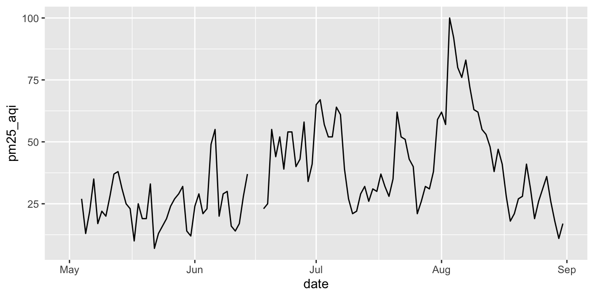
…to this! Tada! 🎉
Because the final figure compares the same summer months across two years, first create a dataset containing May through August of 2025 and 2026 and a year column for faceting:
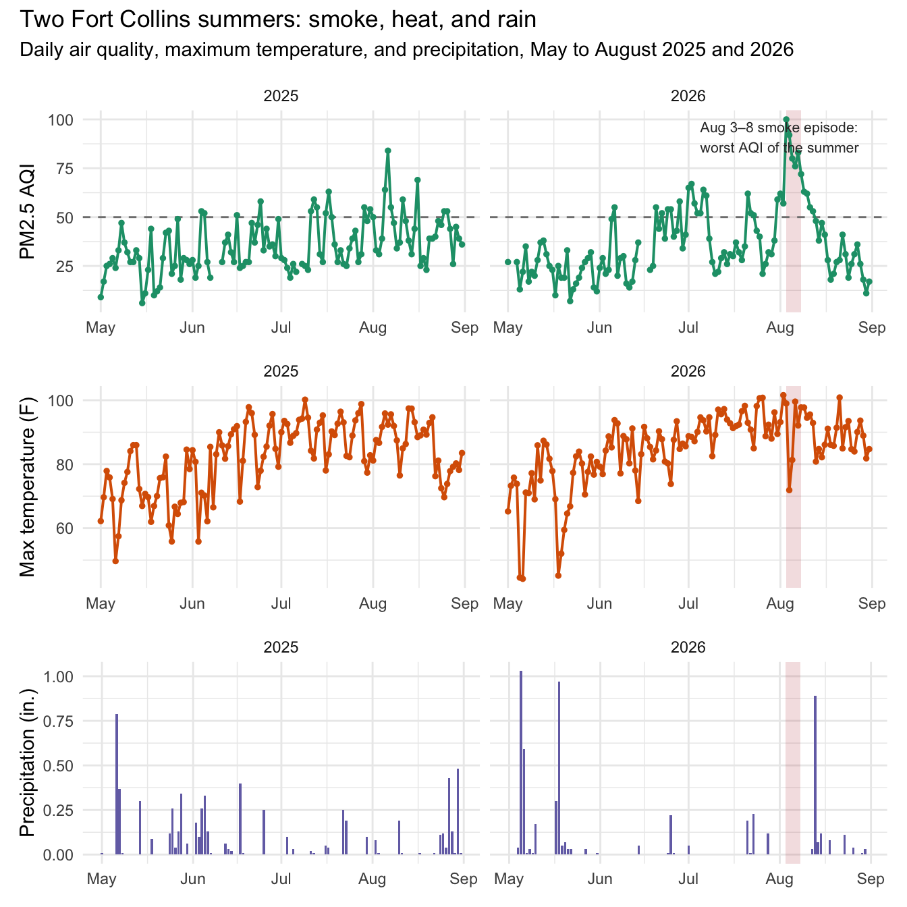
5.2 Building a Line Chart with ggplot2
Every ggplot2 chart is built from the same three pieces:
the data
an aesthetic mapping, inside
aes(), saying which columns become which visual properties (x position, y position, color, size)one or more geoms, the actual marks drawn on the page
A line chart is geom_line() with time on the x axis:
fc_air %>%
ggplot(aes(x = date, y = pm25_aqi)) +
geom_line()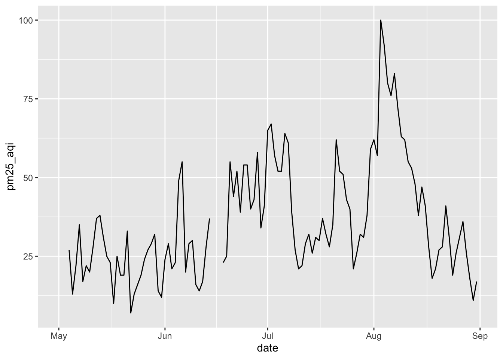
Why are there gaps in the line? Look closely and you will see gaps in early May and mid June. Those dates are still present as rows in fc_air, but pm25_aqi is explicitly recorded as NA because the monitor did not have enough valid hourly observations to calculate a trustworthy daily value.
# A tibble: 5 × 2
date pm25_aqi
<date> <dbl>
1 2026-05-02 NA
2 2026-05-03 NA
3 2026-06-15 NA
4 2026-06-16 NA
5 2026-06-17 NAThat NA is what tells geom_line() to stop the line. If the missing dates were simply absent from the data frame, geom_line() would connect the observations on either side and there would be no visible gap. Keeping the missing dates with an explicit NA makes the pause in the record visible instead of implying that measurements exist continuously through it.
Note the + between ggplot2 layers, rather than the %>% pipe we use elsewhere in the tidyverse. Every chart in this lesson is built by adding layers with +.
Adding points on top makes the individual observations visible, and makes those gaps easier to read. Layers draw in the order you add them, so the points land on top of the line:
fc_air %>%
ggplot(aes(x = date, y = pm25_aqi)) +
geom_line(color = "grey60") +
geom_point(size = 1)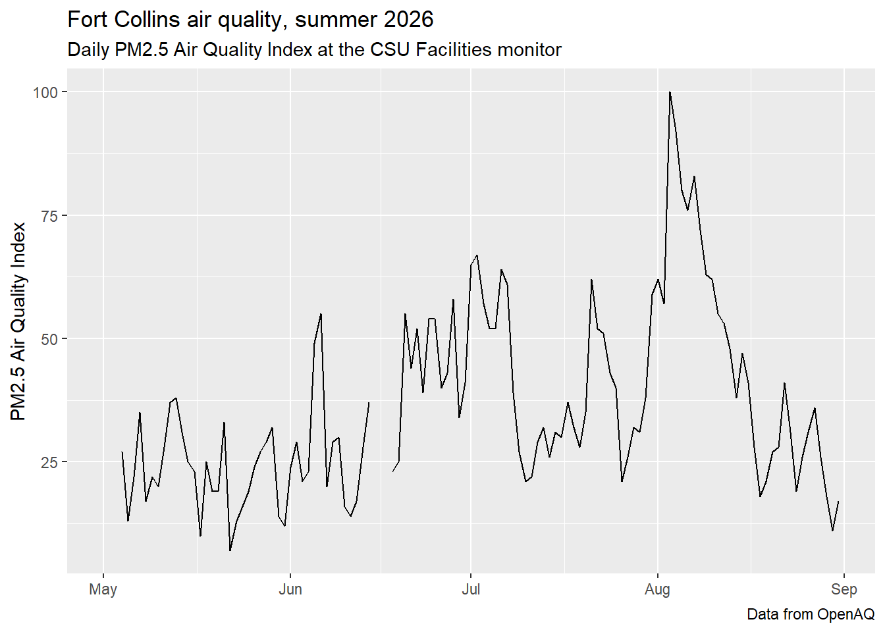
Setting color and size outside of aes() applies one fixed value to everything. Later we will put color inside aes() to map it to a variable, which is a different thing entirely.
Daily data is noisy. When you want the trend rather than the day-to-day jitter, geom_smooth() fits a curve through the points. se = FALSE turns off the shaded confidence band, and span controls how wiggly the curve is (smaller is wigglier):
fc_air %>%
ggplot(aes(x = date, y = pm25_aqi)) +
geom_line(color = "grey75") +
geom_point(color = "grey60", size = 1) +
geom_smooth(se = FALSE, span = 0.3, color = "black", linewidth = 1)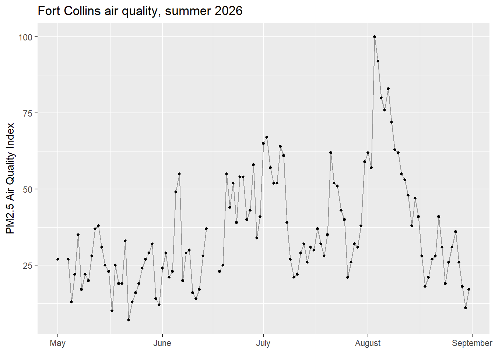
Now the shape of the summer is obvious in a way it was not before: air quality drifts steadily worse from May into August, with a sharp spike at the start of August.
Note: linewidth is the modern argument for line thickness in ggplot2. You may see older code and tutorials use size for lines instead. That still works but will give you a deprecation warning.
5.3 Titles, Labels and Axes
5.3.1 Titles and limits
add a title with
ggtitle()edit axis labels with
xlab()andylab()change axis limits with
xlim()andylim()
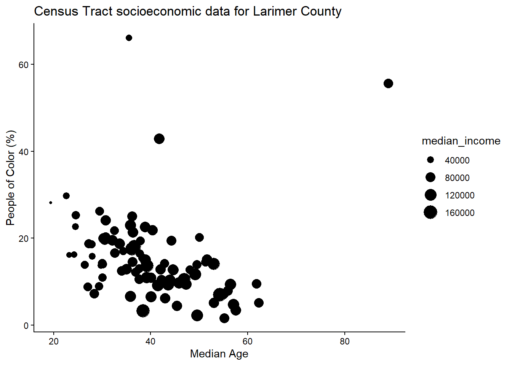
Be cautious of setting the axis limits however, as you notice it omits the full dataset which could lead to dangerous misinterpretations of the data. Here ylim(c(0, 75)) has quietly deleted the entire August smoke episode, the single most important thing in this dataset.
You can also put multiple label arguments within labs() like this, which is usually tidier:
fc_air %>%
ggplot(aes(x = date, y = pm25_aqi)) +
geom_line() +
geom_point(size = 1) +
labs(title = "Fort Collins air quality, summer 2026",
subtitle = "Daily PM2.5 Air Quality Index at the CSU Facilities monitor",
x = NULL,
y = "PM2.5 Air Quality Index",
caption = "Data from OpenAQ")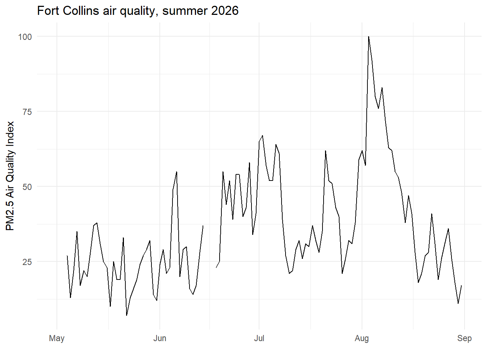
labs() also gives you subtitle and caption, which ggtitle() does not. Setting x = NULL removes the axis title entirely, which makes sense here because the labels already say what they are.
5.3.2 Making the date axis readable
For a continuous variable you control axis breaks with scale_x_continuous(). For dates the equivalent is scale_x_date(), and it is much more convenient because you can ask for breaks in calendar units:
date_breaksaccepts things like"1 month","2 weeks","10 days"date_labelsuses date format codes:%Bis the full month name,%babbreviated,%dday of month,%Yyear
fc_air %>%
ggplot(aes(x = date, y = pm25_aqi)) +
geom_line(color = "grey60") +
geom_point(size = 1) +
scale_x_date(date_breaks = "1 month", date_labels = "%B") +
labs(title = "Fort Collins air quality, summer 2026",
x = NULL,
y = "PM2.5 Air Quality Index")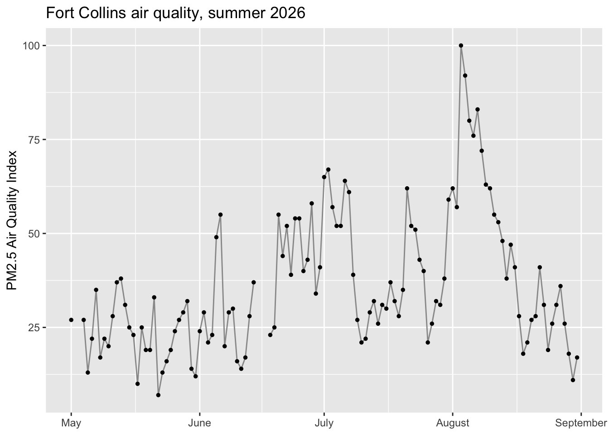
Try changing date_breaks to "1 week" and date_labels to "%b %d" to see how much denser the axis gets, and why picking the right break interval matters.
5.4 Chart Components with theme()
All ggplot2 components can be customized within the theme() function. The full list of editable components (there’s a lot!) can be found here. Note that the functions used within theme() depend on the type of components, such as element_text() for text, element_line() for lines, and element_blank() to remove something entirely.
fc_air %>%
ggplot(aes(x = date, y = pm25_aqi)) +
geom_line() +
geom_point(size = 1) +
labs(title = "Fort Collins air quality, summer 2026",
x = NULL, y = "PM2.5 Air Quality Index") +
scale_x_date(date_breaks = "1 month", date_labels = "%B") +
theme(
# edit plot title
plot.title = element_text(size = 16, color = "blue"),
# edit y axis title
axis.title.y = element_text(face = "italic", color = "orange"),
# edit x axis ticks
axis.text.x = element_text(face = "bold", angle = 45, hjust = 1),
# edit grid lines
panel.grid.major = element_line(color = "black"),
# remove the minor grid lines completely
panel.grid.minor = element_blank()
)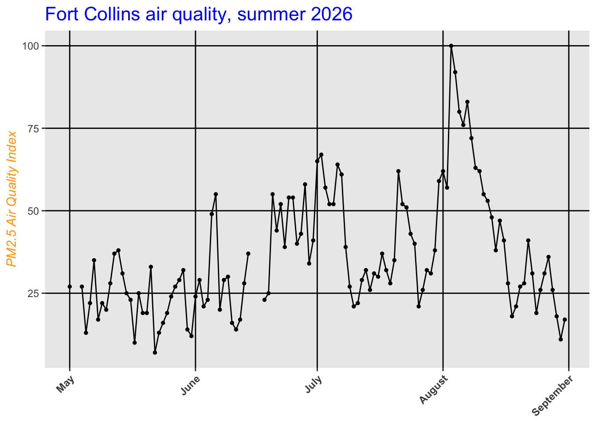
While these edits aren’t necessarily pretty, we are just demonstrating how you would edit specific components of your charts. To edit the overall aesthetics of your plots you can change the theme.
5.4.1 Themes
ggplot2 comes with many built in theme options (see the complete list here).
For example, see what theme_minimal() and theme_classic() look like:
fc_air %>%
ggplot(aes(x = date, y = pm25_aqi)) +
geom_line() +
geom_point(size = 1) +
labs(title = "Fort Collins air quality, summer 2026",
x = NULL, y = "PM2.5 Air Quality Index") +
theme_minimal()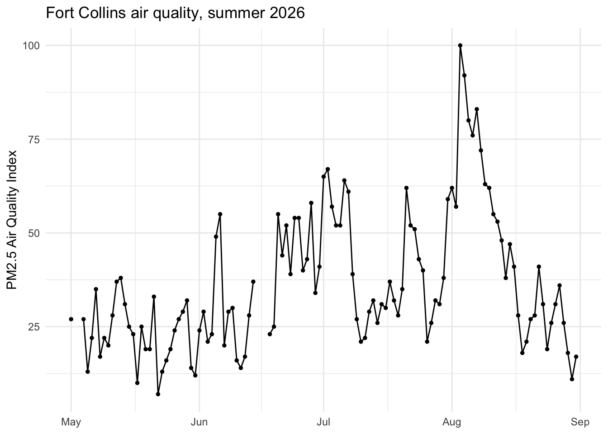
fc_air %>%
ggplot(aes(x = date, y = pm25_aqi)) +
geom_line() +
geom_point(size = 1) +
labs(title = "Fort Collins air quality, summer 2026",
x = NULL, y = "PM2.5 Air Quality Index") +
theme_classic()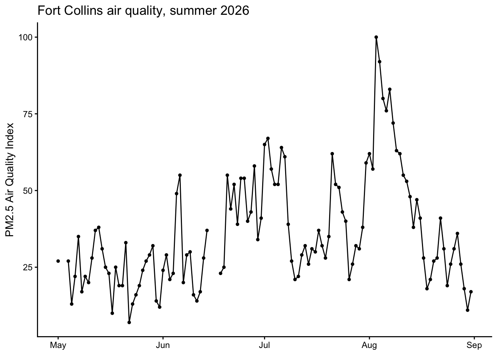
You can also import many different themes by installing certain packages. A popular one is ggthemes. A complete list of themes with this package can be seen here
Now explore a few themes, such as theme_wsj, which uses the Wall Street Journal theme, and theme_economist and theme_economist_white to use themes used by the Economist.
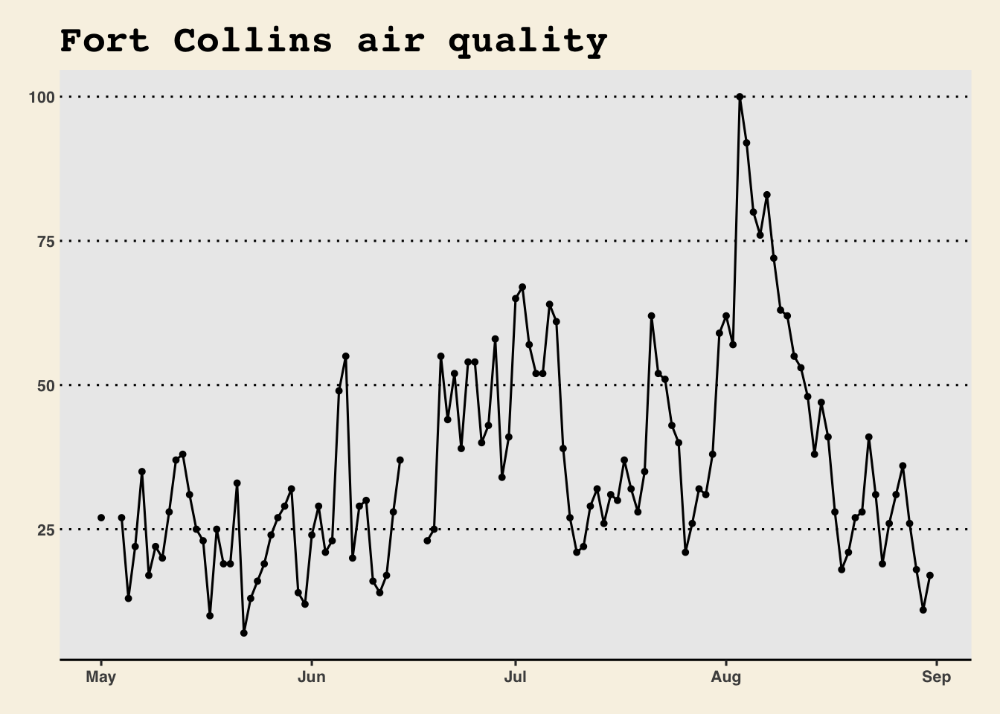
Note you may need to click ‘Zoom’ in the Plot window to view the figure better.
Some themes may look messy out of the box, but you can apply any elements from theme() afterwards to clean it up. Order matters here: the overall theme has to come first, or it will wipe out your individual theme() edits.
fc_air %>%
ggplot(aes(x = date, y = pm25_aqi)) +
geom_line() +
geom_point(size = 1) +
labs(title = "Fort Collins air quality, summer 2026",
x = NULL, y = "PM2.5 Air Quality Index") +
ggthemes::theme_economist() +
theme(plot.title = element_text(size = 12),
axis.title.y = element_text(margin = margin(r = 10)))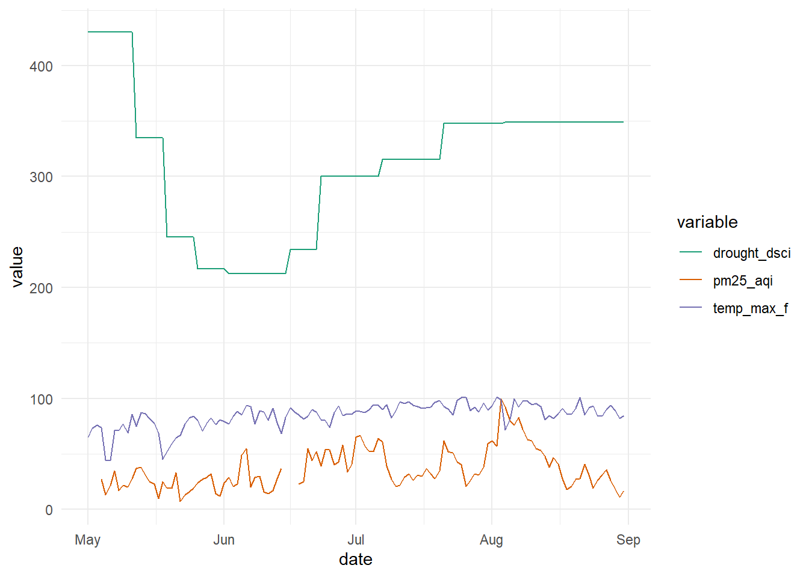
5.5 Color and Legends
To specify a single color, the most common way is to specify the name (e.g., "red") or the Hex code (e.g., "#69b3a2"). That is what we have been doing with color = "grey60" outside of aes().
When color is mapped to a variable inside aes(), ggplot2 builds a legend automatically. For example, we can keep the air-quality line for continuity while coloring individual observations by their AQI category:
fc_air %>%
ggplot(aes(x = date, y = pm25_aqi)) +
geom_line(color = "grey65",
linewidth = 0.7) +
geom_point(aes(color = pm25_category),
size = 2) +
scale_x_date(date_breaks = "1 month", date_labels = "%B") +
labs(x = NULL,
y = "PM2.5 Air Quality Index",
color = "AQI category") +
theme_minimal()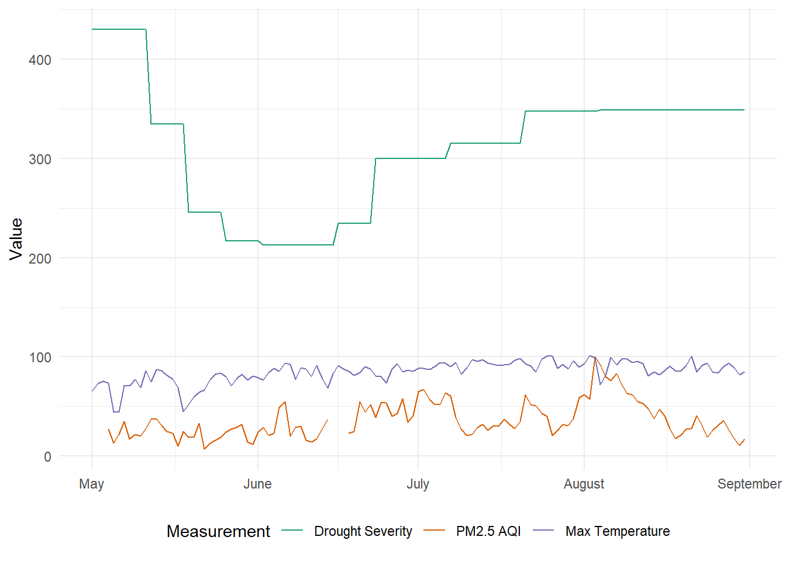
When color is mapped to a variable, you control the colors with a palette. Some of the most common packages to work with color palettes in R are RColorBrewer and viridis. Viridis is designed to be color-blind friendly, and RColorBrewer has a web application where you can explore your data requirements and preview palettes.
The function you use depends on whether your variable is discrete (categories, such as AQI category) or continuous (numbers):
| RColorBrewer | viridis | |
|---|---|---|
| discrete | scale_color_brewer() |
scale_color_viridis_d() |
| continuous | scale_color_distiller() |
scale_color_viridis_c() |
Our pm25_category variable is discrete, so we can use a qualitative Brewer palette:
fc_air %>%
ggplot(aes(x = date, y = pm25_aqi)) +
geom_line(color = "grey65", linewidth = 0.7) +
geom_point(aes(color = pm25_category), size = 2) +
scale_color_brewer(palette = "Dark2",
name = "AQI category",
# remove NA from the legend
na.translate = FALSE) +
scale_x_date(date_breaks = "1 month", date_labels = "%B") +
labs(x = NULL, y = "PM2.5 Air Quality Index") +
theme_minimal() +
theme(legend.position = "bottom")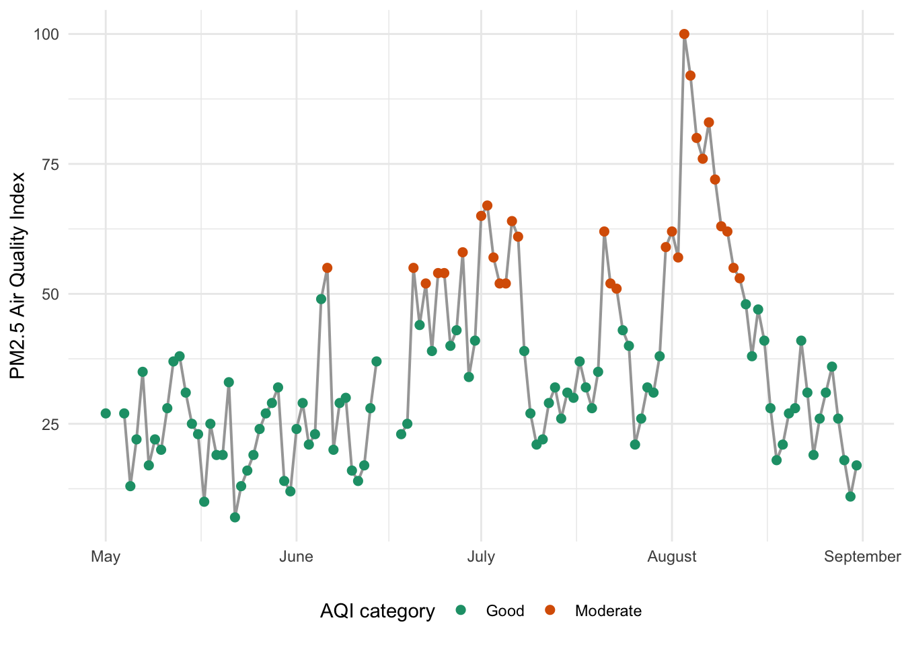
legend.position accepts "bottom", "top", "left", "right", and "none" to remove the legend entirely.
5.6 Three Variables, One Figure
Here is the real question we came for: we have air quality, temperature, and precipitation. How can we look at all three across the same summer?
One tempting approach is to put everything on one set of axes. Because the variables are already separate columns in fc_air, we can add each one as its own layer without transforming the data frame:
fc_air %>%
ggplot(aes(x = date)) +
geom_line(aes(y = pm25_aqi),
color = "#1b9e77",
linewidth = 0.7) +
geom_point(aes(y = pm25_aqi),
color = "#1b9e77",
size = 1) +
geom_line(aes(y = temp_max_f),
color = "#d95f02",
linewidth = 0.7) +
geom_point(aes(y = temp_max_f),
color = "#d95f02",
size = 1) +
geom_col(aes(y = precip_in),
fill = "#7570b3",
width = 0.8,
alpha = 0.7) +
scale_x_date(date_breaks = "1 month", date_labels = "%B") +
labs(x = NULL, y = "Value") +
theme_minimal()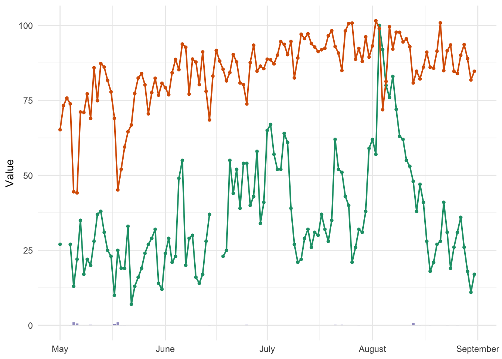
The chart is not very useful.They are all measured in completely different units, and precipitation’s values are much smaller numerically. Putting them all on one y axis flattens the precipitation bars against the bottom and makes the axis itself hard to interpret. Rather than forcing them onto a common scale, we will give each variable its own plot while keeping the dates lined up.
One simple way to do this is with the patchwork package. We keep fc_air exactly as it is and make three ordinary ggplot objects:
p_aqi <- fc_air %>%
ggplot(aes(x = date, y = pm25_aqi)) +
geom_line(color = "#1b9e77", linewidth = 0.7) +
geom_point(color = "#1b9e77", size = 1) +
scale_x_date(date_breaks = "1 month", date_labels = "%B") +
labs(x = NULL, y = "PM2.5 AQI") +
theme_minimal()
p_temp <- fc_air %>%
ggplot(aes(x = date, y = temp_max_f)) +
geom_line(color = "#d95f02", linewidth = 0.7) +
geom_point(color = "#d95f02", size = 1) +
scale_x_date(date_breaks = "1 month", date_labels = "%B") +
labs(x = NULL, y = "Maximum Temperature (F)") +
theme_minimal()
p_precip <- fc_air %>%
ggplot(aes(x = date, y = precip_in)) +
geom_col(fill = "#7570b3", width = 0.8) +
scale_x_date(date_breaks = "1 month", date_labels = "%B") +
labs(x = NULL, y = "Precipitation (in.)") +
theme_minimal()
p_aqi / p_temp / p_precip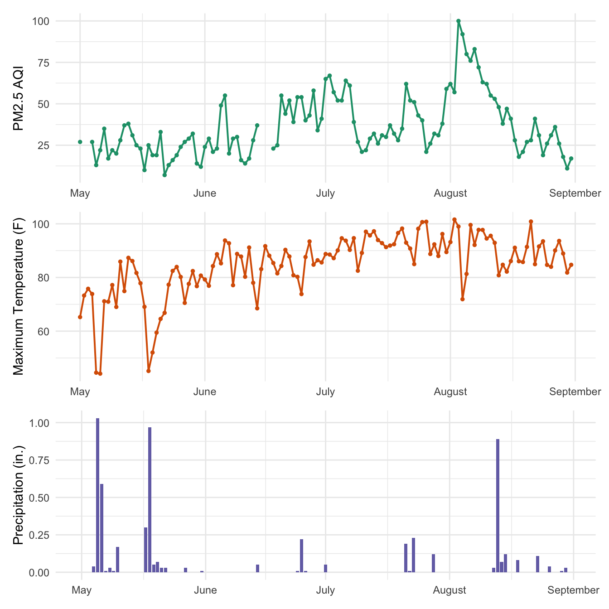
The / is patchwork syntax for “put the next plot underneath this one.” A + puts plots beside each other. Because each object is a separate ggplot, each one automatically keeps its own y-axis scale and units.
Notice that we also use a different geom for precipitation. Temperature and AQI are shown with lines and points, while daily precipitation is shown with bars because each bar represents the amount that fell during that particular day.
patchwork is useful when we want to stack different variables that need different y-axis units. For our final figure, we will also use facet_wrap() inside each plot to compare the same variable across 2025 and 2026.
5.6.1 Faceting by year
facet_wrap() splits one plot into panels using a categorical variable. Just before the preview figure, we created fc_summer with a year column, so comparing the two summers only takes one additional layer:
fc_summer %>%
ggplot(aes(x = date, y = pm25_aqi)) +
geom_line(color = "#1b9e77", linewidth = 0.7) +
geom_point(color = "#1b9e77", size = 1) +
scale_x_date(date_breaks = "1 month", date_labels = "%B") +
facet_wrap(~year, nrow = 1, scales = "free_x") +
labs(x = NULL, y = "PM2.5 AQI") +
theme_minimal()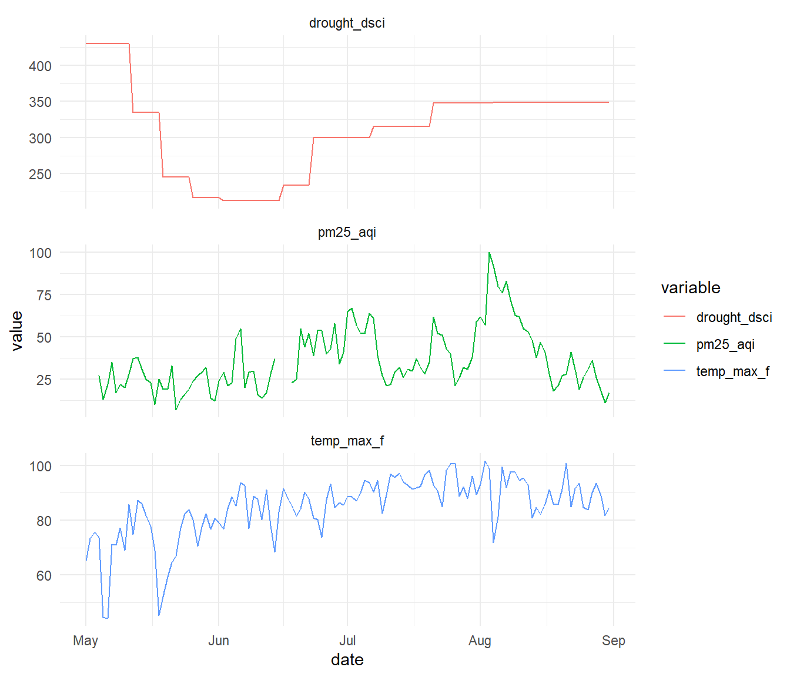
Because 2025 comes before 2026, the 2025 panel appears on the left and 2026 on the right. scales = "free_x" lets each panel use its own summer dates, while the y scale stays the same so values are still directly comparable across years.
5.7 Annotation
Annotation is the process of adding text, lines, shading, or other notes to your charts. In our final figure we want to communicate two things about the air-quality series: where the Good/Moderate AQI boundary falls, and when the worst smoke episode of the summer occurred.
5.7.1 A horizontal reference line
An AQI of 50 is the boundary between the EPA’s “Good” and “Moderate” categories. geom_hline() adds a horizontal reference line, and annotate("text", ...) lets us explain what that line means:
p_aqi +
geom_hline(yintercept = 50,
linetype = "dashed", color = "grey50") +
annotate("text",
x = as.Date("2026-05-01"), y = 55,
label = "Good/Moderate boundary",
size = 3, hjust = 0, color = "grey45")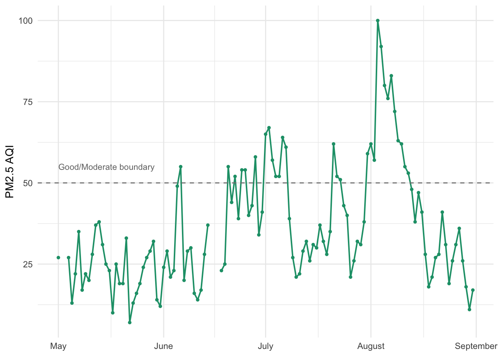
A reference line is useful only when the value has a real interpretation. The same line would make no sense on the temperature or precipitation plots, so we add it only to the AQI plot.
5.7.2 Shading a time window
annotate("rect", ...) draws a rectangle. The trick that makes it work for time series is ymin = -Inf and ymax = Inf, which means “from the bottom of the plot to the top” whatever the y range happens to be:
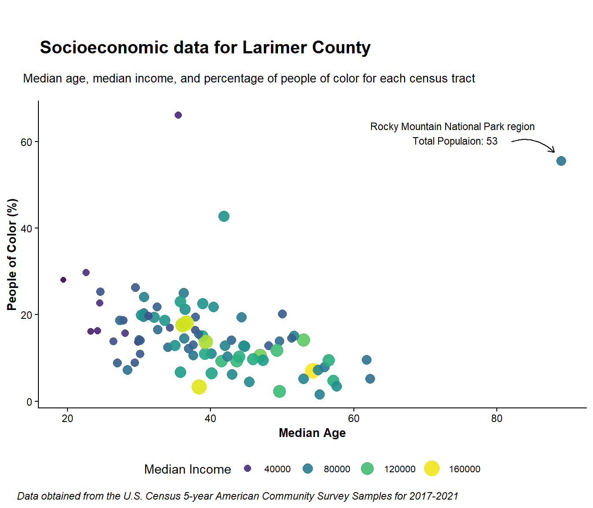
Order matters. The shaded rectangle should be added before the data layers when you build a plot from scratch so that the line and points remain visible on top of it.
Most annotations are repeated across facets automatically. For an annotation that belongs to only one year, such as the August 2026 smoke event, we give the annotation data a year value so facet_wrap() knows which panel should receive it. We will shade that August 2026 window in all three plots, while the explanatory text stays only on the AQI plot.
With annotations you may need to experiment with the x and y positions to get them just right. Also, the preview in the Plot window may look jumbled; clicking ‘Zoom’ can help.
5.8 Finalize and Save
We are almost done with this figure. Below I am putting everything together, faceting each variable by year, and keeping the smoke-window shading in the 2026 facet of all three plots.
Because the smoke event only occurred in 2026, we use one tiny helper data frame to tell ggplot2 which facet should receive that annotation:
smoke_2026 <- tibble(year = 2026)p_aqi_final <- fc_summer %>%
ggplot(aes(x = date, y = pm25_aqi)) +
geom_rect(data = smoke_2026,
xmin = as.Date("2026-08-03"), xmax = as.Date("2026-08-08"),
ymin = -Inf, ymax = Inf,
inherit.aes = FALSE, alpha = 0.15, fill = "firebrick") +
geom_hline(yintercept = 50,
linetype = "dashed", color = "grey50") +
geom_line(color = "#1b9e77", linewidth = 0.7) +
geom_point(color = "#1b9e77", size = 1) +
geom_text(data = smoke_2026,
x = as.Date("2026-07-05"), y = 99,
label = "Aug 3–8 smoke episode:\nworst AQI of the summer",
inherit.aes = FALSE, size = 2.8, hjust = 0, vjust = 1, color = "grey20") +
scale_x_date(date_breaks = "1 month", date_labels = "%B") +
facet_wrap(~year, nrow = 1, scales = "free_x") +
labs(x = NULL, y = "PM2.5 AQI") +
theme_minimal() +
theme(panel.grid.minor = element_blank())
p_temp_final <- fc_summer %>%
ggplot(aes(x = date, y = temp_max_f)) +
geom_rect(
data = smoke_2026,
xmin = as.Date("2026-08-03"), xmax = as.Date("2026-08-08"),
ymin = -Inf, ymax = Inf,
inherit.aes = FALSE, alpha = 0.15, fill = "firebrick"
) +
geom_line(color = "#d95f02", linewidth = 0.7) +
geom_point(color = "#d95f02", size = 1) +
scale_x_date(date_breaks = "1 month", date_labels = "%B") +
facet_wrap(~year, nrow = 1, scales = "free_x") +
labs(x = NULL, y = "Maximum Temperature (F)") +
theme_minimal() +
theme(panel.grid.minor = element_blank())
p_precip_final <- fc_summer %>%
ggplot(aes(x = date, y = precip_in)) +
geom_rect(
data = smoke_2026,
xmin = as.Date("2026-08-03"), xmax = as.Date("2026-08-08"),
ymin = -Inf, ymax = Inf,
inherit.aes = FALSE, alpha = 0.15, fill = "firebrick"
) +
geom_col(fill = "#7570b3", width = 0.8) +
scale_x_date(date_breaks = "1 month", date_labels = "%B") +
facet_wrap(~year, nrow = 1, scales = "free_x") +
labs(x = NULL, y = "Precipitation (in.)") +
theme_minimal() +
theme(panel.grid.minor = element_blank())
(p_aqi_final / p_temp_final / p_precip_final) +
plot_annotation(
title = "Two Fort Collins summers: smoke, heat, and rain",
subtitle = "Daily air quality, maximum temperature, and precipitation, May to August 2025 and 2026",
caption = "PM2.5 from the Fort Collins regulatory monitor via OpenAQ; weather from the CSU CoAgMET Fort Collins station",
theme = theme(
plot.title = element_text(face = "bold", size = 15),
plot.subtitle = element_text(size = 10, color = "grey30",
margin = margin(b = 12)),
plot.caption = element_text(face = "italic", size = 7,
color = "grey40", hjust = 0),
plot.title.position = "plot"
)
)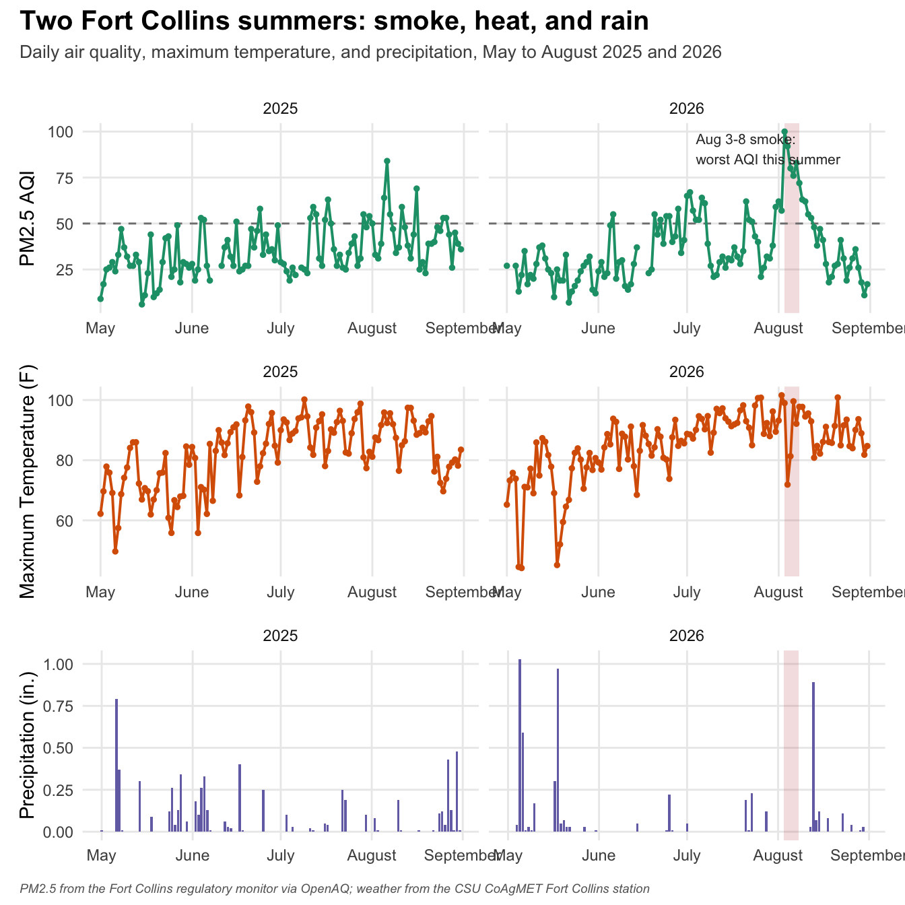
Saving with ggsave
You can save your plot in the “Plots” pane by clicking “Export”, or you can also do it programmatically with ggsave(), which also lets you customize the output file a little more. Note that you can give the argument a variable name of a ggplot object, or by default it will save the last plot in the “Plots” pane.
This final figure now has two columns of facets as well as three stacked plots, so give it a little more width when you save it:
# specify the file path and name, and height/width (if necessary)
ggsave(filename = "images/fort_collins_timeseries.png",
width = 10, height = 7, units = "in", dpi = 300)5.8.0.1 Want to make it interactive?
The plotly package and the ggplotly() function let you make ggplots interactive. Hovering to read exact values on a specific date is genuinely useful for time series.
Because our three panels are separate ggplots, we can convert each one and then stack the interactive versions with subplot():
p1_interactive <- fc_air %>%
ggplot(aes(x = date, y = pm25_aqi)) +
geom_line(color = "#1b9e77", linewidth = 0.7) +
geom_point(color = "#1b9e77", size = 1) +
labs(x = NULL, y = "PM2.5 AQI") +
theme_minimal()
p2_interactive <- fc_air %>%
ggplot(aes(x = date, y = temp_max_f)) +
geom_line(color = "#d95f02", linewidth = 0.7) +
geom_point(color = "#d95f02", size = 1) +
labs(x = NULL, y = "Max Temperature (F)") +
theme_minimal()
p3_interactive <- fc_air %>%
ggplot(aes(x = date, y = precip_in)) +
geom_col(fill = "#7570b3", width = 0.8) +
labs(x = NULL, y = "Precipitation (in.)") +
theme_minimal()
subplot(
ggplotly(p1_interactive),
ggplotly(p2_interactive),
ggplotly(p3_interactive),
nrows = 3,
shareX = TRUE,
titleY = TRUE
)5.9 The Assignment
This week’s assignment is to use anything you’ve learned today, in previous lessons and additional resources (if you want) to make two plots. One ‘good plot’ and one ‘bad plot’. Essentially you will first make a good plot, and then break all the rules of data viz and ruin it. For the bad plot you must specify two things that are wrong with it (e.g., it is not color-blind friendly, jumbled labels, wrong plot for the job, poor legend or axis descriptions, etc.) Be as ‘poorly’ creative as you want!
You can create these plots with any data (e.g., the Fort Collins air quality/weather data from today, the penguins data from past lessons, or new ones!), the good (and bad) visualization just has to be something we have not made in class before.
To submit the assignment, create an R Markdown document that includes reading in of the data, and the code to make the good figure and the bad figure. You will render your assignment to Word or HTML (and make sure both code and plots are shown in the output), and don’t forget to add the two reasons (minimum) your bad figure is ‘bad’. You will then submit this rendered document on Canvas. (20 pts. total)
Note: the class will vote on their favorite bad plot and the winners will receive extra credit! First place will receive 5 points, second place 3 points and third place 1 point of extra credit.
5.9.1 Acknowledgements and Resources
For more on the grammar behind ggplot2, the ggplot2 book by Hadley Wickham, Danielle Navarro, and Thomas Lin Pedersen is an excellent reference. The patchwork documentation has more examples of combining separate ggplots into one figure. The R Graph Gallery has a good time series section, and Fundamentals of Data Visualization by Claus Wilke has an excellent chapter on visualizing time series. Air quality data comes from OpenAQ and weather data from CSU’s CoAgMET network.